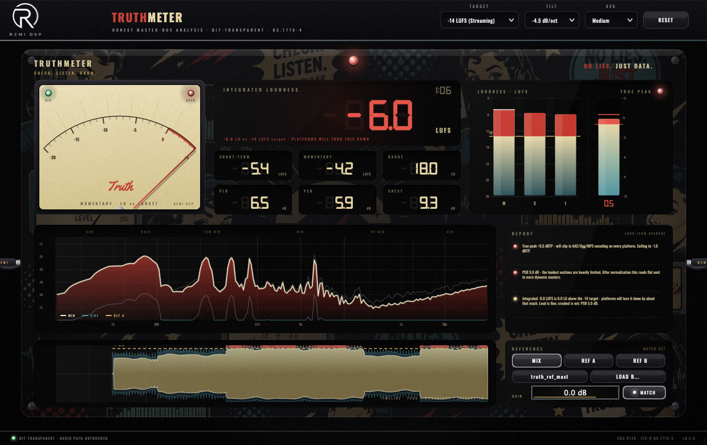
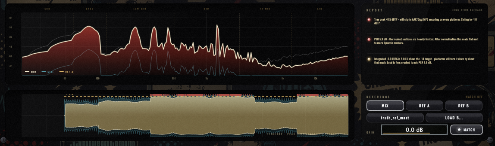

macOS
MACOS 10.15+ · INTEL & APPLE SILICON
Download installerOne installer · App + AU + VST3
REMI DSP · HONEST MASTER-BUS ANALYSIS
TruthMeter sits last on the master bus and never touches a sample — bit-transparent, null-tested on every build. It tells you what the streaming platforms will actually do to your master: honest BS.1770-4 loudness, true peaks the sample grid hides, the PSR/PLR crush numbers, and plain-language verdicts — not just meters, but what's wrong and what it costs you.
FREE DOWNLOAD · NO ACCOUNT REQUIRED

REMI DSP · TRUTHMETER — 44.1–192 kHz
Every number is measured to spec and proven against the official conformance signals: K-weighted, gated integrated loudness per ITU-R BS.1770-4, loudness range per EBU Tech 3342, and a 4× oversampled true-peak detector that catches the inter-sample overs your DAW meter can't see — the ones that clip the AAC/Ogg encode on every platform. And because the audio path is a read-only tap, the null test isn't a promise, it's a build gate: in equals out, bit for bit.

THE REPORT
The spectrum is slope-compensated so a balanced master reads flat — and TruthMeter reads it for you. It flags a mid-scoop with its size in dB, a weak sub, boomy low-mids, a harsh presence band, a dull top. It watches the stereo image too: full-band and low-band correlation, and whether your sub survives mono. Load a reference and the Report speaks in deltas — "Reference A has 2.9 dB more energy at 60–120 Hz" — with every comparison loudness-matched so louder never wins.
Momentary, short-term and gated integrated LUFS plus LRA — implemented to ITU-R BS.1770-4 / EBU R128 and verified against the Tech 3341/3342 conformance vectors within ±0.1 LU, at 44.1 through 192 kHz.
A 4× polyphase interpolator sees between the samples and reports dBTP with max hold — so the −1 dBTP ceiling every platform asks for actually means something.
PSR and PLR tell you how hard the limiter is really working — honest dynamics numbers that survive normalization, with a vintage VU needle reading momentary loudness against your target.
Slope-compensated mid and side traces with tonal-balance zones, a long-term average, and a Report that names the problem: mid-scoop, boom, harshness, dull top — each with its measured size.
Two slots, analyzed offline. Monitoring a reference bypasses your whole master chain, crossfades without a click, gain-matches to your mix's loudness by default — and has its own REF GAIN trim.
A scrolling waveform history: peak envelope, momentary loudness core, the integrated line and a red tick everywhere the true peak broke −1 dBTP. Four minutes of receipts.
Drop it last on the master bus and read the verdicts. No account required — the full version, every format.
MACOS 10.15+ · INTEL & APPLE SILICON
Download installerOne installer · App + AU + VST3
ONE FREE DOWNLOAD · NO ACCOUNT